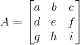

定义
我们首先来看什么叫正定矩阵。标题已经很明确了，首先得是对称矩阵（下文中对称矩阵都指实对称矩阵）。其次，其还得具备以下4点中的任意一点（只要满足1点另外3点一定满足）：
1. 所有特征值都大于0
2. 所有子行列式都大于0.这点我需要解释下，举个例子，一个3*3的矩阵A：

其子行列式定义为以下三种：
3. 其所有主元(pivot)都大于0（因为主元大于0的个数跟特征值大于0的个数是一致的，具体例子可见特征分解）
4. 对于所有可以相乘的x（满足矩阵运算条件的x，且x不等于0）：
对于性质1.2.3是判定的标准，性质4是通过1.2.3推导而来，具体过程以后有空再补上~
详细介绍
我们来做进一步的剖析。假定一个矩阵A：
当x是多少时该矩阵A为正定矩阵？首先其是一个对称矩阵，接下来我们可以利用性质2，因为第一个子行列式为1大于0，第二个子行列式为x-16，也就是说当x>16时该矩阵就是正定矩阵。
换句话说，如果x>16，其一定有两个正的特征值。当x=16时，其有一个为0的特征值，另一个为正的，这时称该矩阵为半正定矩阵。当x<16时，其至少有一个负的特征值。
那我们假设x=16，这时通过性质4可得到一个多项式：
乍看下如果问你这个多项式有没有极小值，如果有是多少？这个肯定看不出，但是我们知道它是半正定矩阵推出的，所以其有极小值=0。我们也可以将多项式用配方法：
那么当x>16，假如x=17时该多项式为（当x1,x2都为0时才等于0）：
那么当x<16,假如x=15时，该多项式为：
这时我们可以断定其没有极小值，因为其不是正定矩阵，或者说其配方后的结果可能出现负数。
所以我们可以配方法来判断二元函数的极小值，也可以通过正定矩阵来判断其极小值。
这时我们可以再仔细研究下配方法，其实其跟矩阵的消元法（或者说LU分解）有密不可分的联系。以x=17时的矩阵A为例：
其中矩阵的主元分别是(x1+4x2)^2的系数和x^2的系数，而转换矩阵L中的转换率4则是(x1+4x2)中x2的系数。照此规律就可以推广到多元函数的配方。
另一方面，判断函数有没有极小值可以靠一阶导数为0，二阶导数>0来判断的。但放到矩阵中，就是靠二阶导数矩阵（或称为Hessian矩阵）的正定性来判断的。比如说一个二元函数 f(x,y),其二阶导数矩阵为：
因为二阶导数fxy=fyx（简单解释下，先对x求导会将只有y部分消去，再对y求导会将x部分消去，那么剩下就是x和y共有的部分；这跟先对y求导消去x部分，再对x求导消去y部分得到的剩下部分一致），所以该矩阵为对称矩阵，只要其满足4条性质中的某条，那么就是正定矩阵，那么该二元函数f就有极小值。
A+B
那么再提个问题，如果A是正定矩阵，B也是正定矩阵，那么A+B是不是正定矩阵？
答案是肯定的。通过性质4可推导出：
A转置乘以A
那对于任意m*n矩阵A，其转置乘以本身得到的结果是正定矩阵么？
我们可以利用性质4：
当A零空间只有零向量时，Ax>0，满足正定矩阵的要求，当A零空间维数大于0时，其Ax>=0,故是半正定矩阵。而这种产生正定矩阵的方法，在机器学习中十分常见，故最好记住其对应性质，以便以后使用~
下一章，奇异值分解——SVD基础篇